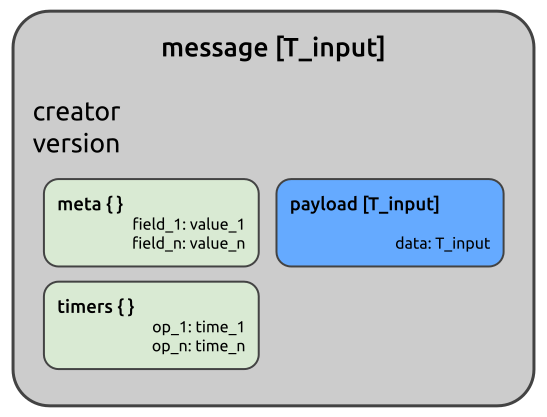

The Message class is Juturna’s fundamental unit of data transfer. Messages
are designed to carry data payloads decorated with versioning, timing, and
arbitrary metadata. Every byte that flows through a pipeline flows inside a
message.
Considering how messages are designed, they can be seen as a two-part entity: a message acts as an immutable envelope, carrying data and its corresponding metadata, while a payload contains the actual domain data to be transferred.
This design favours:
type safety, as ideally nodes always have both knowledge of the type of data they will receive as input, and instruction for how to generate data to transmit as output;
separation of concerns, since payload processing is decoupled from metadata tracking;
observability, as every message carries its own timing and provenance data;
isolation as a direct consequence of the nature of messages (at any given time, a message can be evaulated without extra information needed on its context).

As said, a message is just a simple data container. It carries a payload, plus some extra fields that can be useful to determine who generated it, when, and in which order comared to other messages.
Other than its basic properties, such as creator, version, payload,
meta and timers, a message offers a few methods that can help with
managing its content and representation:
message.to_dict() and message.to_json(encoder) offer serialisation
options for when a message needs to be converted, stored, or transmitted to a
destination that requires serialised content (these are also used by nodes
through their dump_json() method).
message.timeit(t_name) is a context manager supposed to ease the collection
of elapsed time during processing. It can be used to isolate a specific
operation or group of operations, and store their execution time:
with message.timeit('inference_time'):
annotated_image = model.infer(message.payload.image)
message.timers
# {'inference_time': <EXEC_TIME>}
All payload types inherit from a BasePayload, which provides a clone()
method for deep copying. This can be useful when the same message must be sent
to multiple destinations without shared state.
Juturna offers a number of built-in media and structural payloads.
AudioPayload carries np.ndarray audio waveforms with metadata
(sampling rate, channels, start/end timestamps).
ImagePayload wraps multidimensional np.ndarray arrays containing
images, attaching metadata such as width, height, dept, pixel format, and
timestamp.
VideoPayload holds to a list of ImagePayload, with metadata on frames
per second and duration (start and end timestamps).
BytesPayload only contains an array of bytes.
Batch contains a list of messages. A batch is usually produced by a node
buffer whenever its synchroniser marked multiple messages for processing.
ObjectPayload is a subclass of dict design to hold arbitrary key-value
pairs.
The key aspect of both messages and payloads is immutability. In short:
received messages within a node are immutable;
playloads are always immutable, so they cannot be modified once created;
messages can be drafted, so they can be modified before being finalised for transmission.
Aside from its payload, a freshly created message can be modified, just like any other object.
from juturna.components import Message
from juturna.payloads import AudioPayload
message = Message(
creator='creator_name',
version=1,
payload=AudioPayload()
)
# this is allowed
message.version = 2
# this will throw an error!
message.payload.channels = 2
Traceback (most recent call last):
File "<stdin>", line 1, in <module>
File "<string>", line 4, in __setattr__
dataclasses.FrozenInstanceError: cannot assign to field 'channels'
There are situations where it might be conveniente to iteratively create a payload, without the need to store its attribute values somewhere and assign them only once. In this case, a message can be created with a payload draft. A payload draft accepts the type of payload it will eventually be turned into as argument. Other than that, it behaves exactly like a normal payload.
from juturna.components import Message
from juturna.payloads import Draft, AudioPayload
message = Message(
creator='creator_name',
version=1,
payload=Draft(AudioPayload)
)
# this is allowed now
message.payload.channels = 2
Messages can be explicitly made immutable by calling message.freeze().
However, nodes take care of that internally before sending out messages.
Message and payload immutability is a powerful feature: it allows for zero-copy transmission of every bit of data flowing through a pipeline, ensuring integrity and consistency (multiple nodes receiving the same message can be sure the data within that message were not modified by any other node).